МИНИСТЕРСТВО СЕЛЬСКОГО СТРОИТЕЛЬСТВА СССР
(МИНСЕЛЬСТРОЙ СССР)
ВРЕМЕННЫЕ УКАЗАНИЯ
ПО УСТРОЙСТВУ КОРОТКИХ
БУРОНАБИВНЫХ БЕТОННЫХ
И БУТОБЕТОННЫХ СВАЙ
ДЛЯ МАЛОЭТАЖНЫХ
СЕЛЬСКИХ ЗДАНИЙ
ВСН-5-71
УТВЕРЖДЕНЫ
МИНИСТЕРСТВОМ СЕЛЬСКОГО
СТРОИТЕЛЬСТВА СССР
8 июля 1971 г.
МОСКВА - 1971
Настоящие «Временные указания» разработаны на основе и в развитие глав СНиПа II-А.10-62 «Строительные конструкции и основания. Основные положения проектирования», СНиПа II-Б.5-67* «Свайные фундаменты. Нормы проектирования», СНиПа III-А.1-63 «Организация и технология строительного производства. Общая часть», СНиПа III-А.6-62* «Организационно-техническая подготовка к строительству. Основные положения», СНиПа III-Б.6-66 «Фундаменты и опоры из свай и оболочек. Шпунтовые ограждения. Правила производства в приемки работ».
Временные указания разработаны сектором оснований и фундаментов ЦНИИЭПсельстроя кандидатами технических наук А.М. Дондышем, Н.В. Жуковым (руководители темы), инженерами Р.Г. Погосяном, А.Г. Бейритом, В.Г. Мартьяновой при участии кандидатов технических наук В.Б. Бахолдина (НИИ оснований и подземных сооружений), В.М. Алексеева, кандидата геолого-минералогических наук Г.А. Липсона (Воронежский инженерно-строительный институт).
При разработке «Временных указаний» были использованы материалы опыта строительства Днепрооргтехсельстроя (инж. В.М. Чичков), треста «Мособлстрой» № 13 (инж. А.М. Солдатов, Р.К. Яхин и др.), а также материалы Московского инженерно-строительного института им. В.В. Куйбышева.
Научный редактор А.М. ДОНДЫШ
СОДЕРЖАНИЕ
|
Министерство сельского строительства СССР (Минсельстрой СССР) |
Ведомственные строительные нормы |
ВСН-5-71 |
|
Временные указания по устройству коротких буронабивных бетонных и бутобетонных свай для малоэтажных сельских зданий |
Минсельстрой СССР Вводятся впервые |
1.1. Настоящие «Временные указания» содержат требования по устройству и проектированию фундаментов из коротких (до 3 м) буронабивных свай для малоэтажных сельских зданий и сооружений.
Примечание: 1. «Временные указания» не распространяются на устройство свай в сейсмических районах (кроме с/х производственных зданий), насыпных грунтах, просадочных лёссовых грунтах, набухающих от замачивания грунтах, на подрабатываемых территориях и в других особых условиях, для которых существуют дополнительные требования.
2. При глубине свай свыше 3 м следует пользоваться СНиПом II-Б.5-67*.
1.2. При проектировании фундаментов из коротких буронабивных свай, кроме настоящих «Временных указаний», следует руководствоваться требованиями СНиПа II-Б.5-67*, СНиПа II-Б.1-62* «Основания зданий и сооружений. Нормы проектирования»; СНиПа II-В.1-62* «Бетонные и железобетонные конструкции. Нормы проектирования» и другими действующими нормативными документами по строительным материалам и изделиям, организации и технологии строительного производства.
|
Внесены Министерством сельского строительства СССР |
Утверждены Министерством сельского строительства СССР 8 июля 1971 г. |
Срок введения 1 ноября 1971 г. |
1.3. Проектирование коротких буронабивных свай осуществляется на основе данных инженерно-геологических и гидрогеологических взысканий, производимых в соответствии с требованиями действующих нормативных документов.
2.1. Буронабивные сваи изготавливаются из бетона и бутобетона.
Примечание. Применение бутобетона допускается при диаметре скважины не менее 500 мм в восприятии сваей только осевой сжимающей нагрузки.
2.2. При передаче на свайный фундамент горизонтальных нагрузок или изгибающих моментов буронабивные сваи армируются по расчетной длине ствола. Толщина защитного слоя бетона должна быть не менее 50 мм.
2.3. В зависимости от нагрузки и конструктивных требований буронабивные фундаменты могут быть в виде одиночных свай, рядов или кустов.
2.4. Рациональной областью применения фундаментов из коротких буронабивных свай являются глинистые грунты (супеси, суглинки, глины) с коэффициентом консистенции В £ 0,4 и коэффициентом пористости e £ 1.
3.1. Для изготовления буронабивных свай применяют бетон и бутобетон марок не менее 100.
Материалы для приготовления бетонной смеси должны удовлетворять требованиям глав СНиПов I-B.1-62 «Заполнители для бетонов и растворов»; I-B.2-69 «Вяжущие материалы неорганические и добавки для бетонов и растворов»; I-B.3-62 «Бетоны на неорганических вяжущих и заполнителях»; I-B.8-62 «Материалы и изделия из природного камня».
3.2. При назначении состава бетонных смесей для армированных свай наибольший размер зерен крупного заполнителя должен быть не более 30 мм.
3.3. При назначении состава бетонных смесей, в которые втапливается камень, необходимо руководствоваться следующими условиями:
- водоцементное отношение бетонных смесей должно быть в пределах 0,5 - 0,75;
- удобоукладываемость бетонной смеси не должна превышать 10 - 15 сек;
- наибольший размер зерен крупного заполнителя не должен превышать 70 мм.
3.4. Для втапливания применяют камень размером не более 150 мм, к которому предъявляют следующие требования:
- прочность на сжатие должна быть не ниже проектной марки бутобетона;
- по морозостойкости камень должен отвечать требованиям, предъявляемым крупному заполнителю для бетонных смесей;
- при загрязненности камень необходимо промыть.
3.5. Содержание камня в бутобетоне не должно превышать 30 %.
4.1. Состав и объем изыскательских работ определяется для каждого объекта проектной и изыскательской организациями в соответствии с требованиями главы СНиПа II-A.13-69 «Инженерные изыскания для строительства. Основные положения», а также требованиями настоящего раздела.
4.2. Глубина разведочных выработок (скважин, шурфов) должна быть ниже подошвы буронабивных свай не менее чем на 3 м.
4.3. Для разработки проекта фундаментов из коротких буронабивных свай необходимы следующие данные:
а) отчет по инженерно-геологическим и гидрогеологическим изысканиям с планом расположения геологических выработок, колонками изученных разрезов и профилями;
б) данные по лабораторным определениям физико-механических свойств грунтов;
в) планы и разрезы зданий и сооружений, их планировочные и черные отметки, пункты и размеры местных заглублений частей здания, расположение и размеры отверстий для ввода и выгода подземных инженерных коммуникаций;
г) характер и величины нагрузок, передаваемых на фундаменты сооружений.
4.4. Для лабораторных работ рекомендуется следующий состав определений: для песчаных грунтов, залегающих в плоскости нижних концов буронабивных свай, - гранулометрический состав, удельный вес, объемный вес, влажность, пористость; для глинистых грунтов - влажность, пределы пластичности, удельный вес, объемный вес, пористость.
4.5. Физико-механические характеристики грунта определяя в соответствии с требованиями ГОСТа 5179-64 «Грунты. Методы лабораторного определения влажности»; ГОСТа 5181-64 «Грунты. Методы лабораторного определения удельного веса»; ГОСТа 5182-64 «Грунты. «Методы лабораторного определения объемного веса»; ГОСТа 5183-64 «Грунты. Методы лабораторного определения границ раскатывания»; ГОСТа 5184-64 «Грунты. Методы лабораторного определения границы текучести»; ГОСТа 12071-66 «Грунты. Отбор, упаковка, хранение и транспортировка образцов»; ГОСТа 12536-67 «Грунты. Методы лабораторного определения зернового (гранулометрического) состава».
5.1. Производство работ по устройству коротких буронабивных свай осуществляют в соответствии с требованиями глав СНиПа III-А.6-62*; СНиПа III-Б.6-62, а также требований настоящего раздела.
5.2. После срезки растительного слоя и планировки площадки осуществляют разбивку точек расположения буронабивных свай. Отклонение геометрических осей от проектного пояснения в плане не должно быть более ± 5 мм.
5.3. Проходку скважин осуществляют бурильными агрегатами, технические характеристики которых приведены в табл. 1 и 1a.
5.4. После бурения скважин остаточный разрыхленный грунт с забоя следует уплотнить или удалить с помощью специального приспособления (приложение 2), которое крепится к штанге бурильного агрегата.
Уплотнение разрыхленного грунта в забое может быть осуществлено бурильным агрегатом за счет развития максимального усилия подачи бура без его вращения или ручными трамбовками.
5.5. Пробуренные скважины перекрывают щитами.
5.6. Разрыв во времени между образованием скважин и их бетонированием не должен превышать 3 суток.
5.7. Укладку бетонной смеси в скважины производят слоями с тщательным вибрированием. При этом толщина уплотняемых слоев не должна превышать 1,25l (l - длина рабочей части вибратора, м).
5.8. Для удобства производства работ, предупреждения обрушения грунта в области устья скважины укладку бетона, бутобетона осуществляют через инвентарную загрузочную воронку (приложение 3).
5.9. Составляющие бутобетонной смеси можно подавать в скважины как совмещенным, так и раздельным способами.
5.10. При совмещенном способе бутобетон подают в скважины одновременно в одной транспортной емкости. В этом случае контейнер заполняют чередующимися слоями бетонной смеси и камня.
Таблица 1
|
Бурильные агрегаты с дополнительным оборудованием |
|||||||
|
бурильно-крановые агрегаты на базе автомобилей |
бурильно-крановые агрегаты на базе гусеничных тракторов |
||||||
|
БКГМ-63-3 |
БКМА-1,0/3,5 |
БМ-302 |
БМУ-2 |
БМ-303 |
БКМГ-1,2/3,5 |
БКМГ-100 |
|
|
Диаметр бурения, м |
0,35 - 0,8 |
0,3 - 1 |
0,35 - 0,8 |
0,2 - 1 |
0,35 - 0,8 |
0,3 - 1,2 |
0,15 - 2,0 |
|
Глубина бурения, м |
3 |
3,5 |
3 |
3 |
3 |
3,5 |
3,6 - 6,0 |
|
Шасси |
ГАЗ-66А ГАЗ-63А |
ЗИЛ-130 ЗИЛ-164 |
ГАЗ-66 |
ГA3-63A |
Т-74 |
С-100 |
С-100 Д-271 |
|
Число оборотов бура в минуту |
95 - 160 |
14 - 180 42 - 140 |
120 - 208 |
39 |
- |
40 - 175 |
48,5 - 13,5 |
|
Усилие подачи (опускания) бура, т |
- |
4,4 2 |
- |
3 |
- |
2 |
- |
|
Мощность двигателя, л.с. |
115 |
148 97 |
115 |
70 |
- |
- |
- |
|
Продолжительность бурения скважин, мин |
4 - 9,5 |
- |
- |
1,5 - 5 |
5 - 15 |
- |
- |
|
Грузоподъемность, т |
1,2 |
1,8 |
- |
2,5 |
- |
- |
- |
|
Общий вес машины с навеской, т |
5,30 |
6,325 6.57 |
5,306 |
5,60 |
- |
- |
16,90 |
Таблица 1a
|
Бурильные агрегаты без дополнительного оборудования |
||||||||
|
бурильные агрегаты на базе автомобилей |
бурильные агрегаты на базе гусеничных тракторов |
|||||||
|
MPK-1 |
БМ-157/1,3 |
БМА-157 |
БС-4 |
МРК-2 |
MPK-4T |
Б-8 |
БН-8 |
|
|
Диаметр бурения, м |
0,65 |
0,8 - 1,3 |
0,15 - 0,75 |
0,4 - 0,65 |
0,65 |
0,65 |
0,4 - 0,75 |
0,65 - 0,75 |
|
Глубина бурения, м |
3,5 |
3,5 |
6,5 |
3,2 |
3,5 |
3,5 |
3,5 |
3,5 |
|
Шасси |
ЗИЛ-157 |
ЗИЛ-157 |
ЗИЛ-157 |
ТДТ-60 ЗИЛ-157 |
ТДТ-60 ТДТ-75 |
Т-100М |
С-100 |
С-80 |
|
Число оборотов бура в минуту |
20 - 65 |
41 - 226 |
50 - 104 |
20 - 65 |
29 - 96 |
26 - 78 |
48,5 - 133 |
- |
|
Усилие подачи (опускания) бура, т |
4,4 |
3,7 |
- |
2 |
4,45 |
- |
- |
- |
|
Мощность двигателя, л.с. |
100 |
100 |
- |
- |
- |
- |
90 |
- |
|
Продолжительность бурения скважины, мин |
3 - 4 |
- |
- |
14 - 15 |
3 - 5 |
- |
12 - 15 |
12 - 15 |
|
Общий вес машины с навеской, т |
8,87 |
- |
7,60 |
7,514 |
14,087 |
16,30 |
14,30 |
16,90 |
Примечание. Соотношение слоев бетонной смеси и камня в контейнере определяют в зависимости от процентного содержания камня в общем объеме камнебетона.
5.11. При раздельном способе подачи бутобетона в скважину бетонную смесь транспортируют бадьями, а камень рекомендуется подавать в контейнерах, конструкция которых обеспечивает порционную подачу (приложение 4).
5.12. При раздельном способе подачи бутобетона рекомендуется следующая последовательность операций:
- в подготовленную скважину укладывают бетонную смесь толщиной слоя 50 - 35 см;
- на слой бетонной смеси укладывают слой камня толщиной до 25 см;
- камень втапливают в бетонную смесь подстилающего слоя.
5.13. Втапливание камня в бетонную смесь производят в совмещенном способе поверхностным вибратором с удельным статическим давлением не менее 80 г/см2, в раздельном - глубинным вибратором, оснащенным втапливающими козырьками.
5.14. При устройстве бутобетонных свай часть скважины длиной 0,5 м от устья рекомендуется заполнять бетоном.
5.15. Камень должен быть полностью погружен в бетонную смесь.
5.16. Перерывы между кладкой подстилающего слоя бетонной смеси, слоя камня и втапливавием его не должны превышать 10 мин.
Примечание. После длительного перерыва (неисправность оборудования, временное отключение электроэнергии и т.п.) невтопленный камень следует перекрыть слоем бетона с виброуплотнением последнего. Дальнейшие операции производят в соответствии с п. 5.12.
5.17. Уход за бетоном и бутобетоном необходимо осуществлять с соблюдением следующих правил:
а) открытые поверхности бетона, бутобетона должны быть укрыты опилками, грунтом и другими влагоемкими материалами;
б) при температуре наружного воздуха +15 °С и выше открытые поверхности необходимо увлажнять.
6.1. Подготовку грунта, подлежащего разработке в зимних условиях, производят следующими способами:
а) предохранение от промерзания - обработкой грунта хлористым натрием (поваренной солью) или хлористым кальцием, а также сульфитно-спиртовой бардой; количество добавок на 1 м3 грунта, подлежащего разработке, составляет: хлористого натрия 1 кг, хлористого кальция 0,5 кг, сульфитно-спиртовой барды 2,5 л;
б) предварительное вспахивание грунта (плугами и рыхлителями) с последующим боронованием на глубину 10 - 15 см.
В этом случае необходимо обеспечить естественный сток атмосферных вод с поверхности утепляемого участка.
6.2. Готовые скважины перекрывают утепленными матами или щитами.
6.3. При образовании на стенках скважин наледи или попадания снега производят очистку их и прогрев непосредственно перед бетонированием.
6.4. Перед установкой в скважины арматурный каркас необходимо прогреть до положительной температуры.
6.5. В процессе производства работ загрузочную воронку периодически очищают от остатков бетонной смеси.
6.6. Транспортирование бетонной, бутобетонной смеси в зимних условиях должно производиться с соблюдением условий, замедляющих процесс остывания смеси в пути и перегрузках.
6.8. Для подогрева камня могут быть использованы вода или воздух, пар или дымовые газы. Выбор способа подогрева производят с учетом конкретных местных условий, объемов работ и стоимости.
6.9. Допускается применять в зимних условиях холодные бетонные и бутобетонные смеси (смеси с повышенными добавками хлористых солей) для устройства неармированных буронабивных свай при соблюдении указаний п. 6.10 и 6.11).
6.11. Применение холодных бетонов и бутобетонов допускается с соблюдением следующих требований:
а) общее количество вводимых хлористых солей в бетонную, бутобетонную смесь не долено превышать (считая на безводные соли) 7 % от веса цемента или 15 % от веса воды затворения. При этом рекомендуются концентрации хлористых солей в зависимости от температуры твердения бетона, приведенные в табл. 2.
Таблица 2
|
Концентрация солей в процентах безводного вещества солей от веса воды затворения (включая влагу в заполнителях) |
||
|
хлористый натрий |
хлористый кальций + хлористый натрий |
|
|
До -5 |
5 |
- |
|
От -5 до -10 |
- |
3 + 7 |
|
От -10 до -15 |
- |
9 + 6 |
б) допускается применение хлористых солей с пластифицирующими добавками в соответствии с указаниями строительной лаборатории;
в) бетонная, бутобетонная смесь в период укладки в скважины не должна содержать частиц льда, снега и смерзшихся комьев исходного материала;
г) при раздельном способе укладки бутобетона в скважины камень должен быть очищен от снега и льда. Температура его должна быть не ниже -5 °С;
д) предельно допустимая длительность транспортирования и сроки укладки бетонной и бутобетонной смеси должны быть установлены опытным путем с учетом сроков начала загустевания и потери подвижности смеси.
6.12. При необходимости может быть применен паро- или электропрогрев бетона, бутобетона.
7.1. Контроль качества работ должен осуществляться инженерно-техническим персоналом по следующим видам работ: бурению скважин; установке арматурного каркаса; бетонированию ствола; устройству монолитного железобетонного ростверка и его сопряжению со сваей; устройству сборного железобетонного ростверка, сопряжению его элементов между собой и сваями.
7.2. Работы по бурению скважин разрешается выполнять после сдачи по акту исполнительной схемы по геодезической разбивке пунктов расположения свай.
7.3. В процессе устройства скважин необходимо проверять соответствие фактической и проектной глубин, их диаметра, а также отклонение осей скважин от вертикали.
Отклонение устья скважин от проектного положения в плане не должно превышать 30 мм при диаметре скважин 350 - 600 мм; 50 мм при диаметре скважин 700 - 800 мм.
Отклонение оси скважины от вертикали не должно превышать 10 мм на 1 м длины. Отклонение верха свай от проектного положения не должно превышать ± 20 мм.
7.4. Контроль качества укладки бетона и бутобетона осуществляется путем постоянной проверки выполнения настоящих «Временных указаний», а также отбора образцов бетонной смеси с последующим испытанием ее.
7.5. Контроль качества бетона и бутобетона в зимних условиях должен осуществляться с соблюдением правил п. 6.7 - 6.13 настоящих Указаний и дополнительно путем наблюдений за температурой смеси в период ее укладки, изучения температурного режима твердения, проверки прочности дополнительных контрольных образцов при сжатии.
7.6. Наблюдения за температурой, режимом твердения в проверку прочности контрольных образцов производят в соответствии с требованиями главы СНиПа II-В.1-62* «Бетонные и железобетонные конструкции монолитные. Общие правила производства и приемки работ».
7.7. Устройство сборного ростверка допускается лишь после достижения материалом свай прочности не менее 15 кг/см2. Сроки достижения указанной прочности устанавливают в соответствии с данными строительной лаборатории. Устройство монолитного ростверка допускается независимо от прочности бетона.
7.8. Перед началом работ по устройству ростверка составляют акт на выполненные работы по устройству свайных фундаментов с исполнительным планом, в котором должны быть указаны отклонения свай от проектного положения в плане и по высоте.
7.9. Приемку ростверка оформляют актом. Для монолитного ростверка по акту сдают также работы по изготовлению и монтажу арматурных каркасов. Исполнитель предъявляет фактические данные о прочности бетона, установленной по испытаниям контрольных образцов.
При сдаче сборного железобетонного ростверка представляет акт приемки стыков, сопряжений и заводские паспорта изделий.
Примечание. Работы по возведению стен могут быть начаты после достижении бетоном не менее 70 % проектной прочности на сжатие.
7.10. Исполнитель предъявляет журнал производства работ и результаты статических испытаний свай (если они проводились).
8.1. Бурение скважин, транспортировка и укладка бетонной и бутобетонной смеси должны производиться в соответствия с «Едиными правилами безопасности при геологоразведочных работах» и СНиПом III-А.11-70* «Техника безопасности в строительстве».
8.2. Перед началом буровых работ строительную площадку необходимо оградить и вывесить предупреждающие плакаты.
8.3. До начала буровых работ следует изучить расположение подземных коммуникаций (электрокабелей, газопровода и др.) и получить разрешение на производство работ; произвести осмотр бурового агрегата и исправить обнаруженные дефекты.
8.4. Нe разрешается опускать буровой инструмент с недовернутыми и незакрепленными винтовыми соединениями.
8.5. Спуск и подъем бурового инструмента необходимо производить после подачи сигнала.
8.6. В период спуска и подъема бурового инструмента не допускается пребывание посторонних лиц в пределах не менее полуторной высоты вышки бурильного агрегата от устья скважины.
8.7. Запрещается очищать буровой инструмент при его вращении, пуске и подъеме.
8.8. После окончания бурения и перемещения агрегата на следующую точку устье готовой скважины должно быть перекрыто щитом.
8.9. При выгрузке камня рабочие должны находиться от контейнера на расстоянии не менее 3 м.
8.10. Перед подъемом бетонной смеси или камня автокраном необходимо проверить исправность тары (бункера, бадьи и т.д.). Тара для бетонной смеси и камня должна быть снабжена специальными приспособлениями (замками), не допускающими случайной выгрузки.
8.11. В момент выгрузки расстояние от низа бадьи или контейнера до верха загрузочной воронки не должно превышать 1 м.
8.12. Для обслуживания вибратора должен назначаться специальный рабочий-оператор, изучивший работу вибратора и прошедший инструктаж по технике безопасности при укладке бетона и бутобетона в скважины.
8.13. Перед началом работы вибратора должна быть проверена исправность электрической части путем включения вибраторе на 10 - 15 сек., наружных узлов путем внешнего осмотра.
8.14. При уплотнении бетонной и бутобетонной смеси электровибратором необходимо:
- рукоятку вибратора снабдить амортизатором, обеспечивающим амплитуду вибрации ее не выше норм для ручного электроинструмента;
- назначить длину питающего кабеля, позволяющую устанавливать вибратор в любой скважине в пределах здания (захватки);
- до начала работ заземлить корпус электровибратора;
- переход от одной скважины к другой производить при выключенном вибраторе, не используя для этого шланговый провод или кабель.
8.15. После окончания работ по уплотнению бетона и бутобетона вибратор и провода необходимо очистить от бетонной смеси и грязи, насухо протереть; провода сложить в бухты и вместе с вибратором сдать в кладовую.
ПРОЕКТИРОВАНИЕ И РАСЧЕТ КОРОТКИX БУРОНАБИВНЫХ СВАЙНЫХ ФУНДАМЕНТОВ
1. Проектирование буронабивных свайных фундаментов производится в одну стадию - технорабочий проект.
2. Глубину заложения буронабивных свайных фундаментов назначают в соответствии с требованиями главы 4 СНиПа II-Б.1-62*.
3. Расчет буронабивных свай по первому и второму предельным состояниям производят с учетом совместной работы свай и грунта, окружающего и подстилающего сваю, по формулам:
N £ P; (1)
S £ Sпр.ср, (2)
где N - расчетная нагрузка на буронабивную сваю, т;
Р - несущая способность буронабивной сваи, т;
S - величина осадки свайного фундамента, определяемая расчетом в соответствии с указаниями раздела 7 СНиПа II-Б.5-67*;
Sпр.ср - предельная величина средней осадка основания свайного фундамента, назначаемая проектом или принимаемая по табл. 11 СНиПа II-Б.1-62*.
4. Несущую способность буронабивных свайных фундаментов, воспринимающих вертикальную сжимающую нагрузку, определяют исходя из сопротивления материала фундамента и сопротивления грунта основания (под нижним концом и на боковой поверхности сваи), принимая меньшее из двух значений.
5. Несущая способность буронабивных свай по материалу на осевое сжатие (Рм) рассчитывается по формуле
Pм = mFR, (3)
где m - коэффициент условий работы, принимаемый равным 0,6;
F - площадь поперечного сечения сваи, м2;
R - расчетное сопротивление материала сваи осевому сжатию, т/м2;
6. Несущая способность буронабивной сваи по грунту, работающей на осевую сжимающую нагрузку (Р), определяется по формуле
где k - коэффициент однородности грунта, принимаемый К = 0,7;
m - коэффициент условий работы, принимаемой равным 1;
Rн - нормативное сопротивление грунта под нижним концом сваи, принимаемое по таблицам 1, 2, 3, т;
F - площадь опирания сваи, м2;
u - периметр сваи, м;
mf - дополнительный коэффициент условий работы. Величина коэффициента mf определяется опытным путем, а при отсутствии опытных данных коэффициент mf может быть принят mf = 0,8;
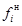
li - толщина i-го несущего слоя грунта, соприкасающегося с боковой поверхностью сваи, м.
Примечания: 1. Данными табл. 1, 2, 3 можно пользоваться при глубине заложения свай от 1,5 по 3 м.
2. Если в пределах стволе сваи залегает слой насыпного грунта, сопротивление его на боковой поверхности не учитывается.
Таблица 1
НОРМАТИВНЫЕ СОПРОТИВЛЕНИЯ КРУПНООБЛОМОЧНЫХ ГРУНТОВ (НЕЗАВИСИМО ОТ ВЛАЖНОСТИ) В ПЛОСКОСТИ НИЖНИХ КОНЦОВ БУРОНАБИВНЫХ СВАЙ
|
Наименование грунта |
Нормативное сопротивление (Rн), т/м2 |
|
Щебенистый (галечниковый) с песчаным заполнением пор |
90 |
|
Дресвяный (гравийный) из обломков кристаллических пород |
75 |
|
Дресвяный (гравийный) из обломков осадочных пород |
45 |
Таблица 2
НОРМАТИВНЫЕ СОПРОТИВЛЕНИЯ ПЕСЧАНЫХ ГРУНТОВ В ПЛОСКОСТИ НИЖНИХ КОНЦОВ БУРОНАБИВНЫХ СВАЙ
|
Наименование грунта |
Нормативные сопротивления Rн, т/м2 |
|||
|
плотных |
средней плотности |
|||
|
маловлажные |
влажные |
маловлажные |
влажные |
|
|
Пески крупные |
70 |
70 |
50 |
50 |
|
Пески средней крупности |
55 |
55 |
40 |
40 |
|
Пески мелкие |
45 |
37 |
30 |
25 |
|
Пески пылеватые |
40 |
30 |
30 |
20 |
Таблица 3
НОРМАТИВНЫЕ СОПРОТИВЛЕНИЯ ГЛИНИСТЫХ ГРУНТОВ В ПЛОСКОСТИ НИЖНИХ КОНЦОВ БУРОНАБИВНЫХ СВАЙ
|
Коэффициент пористости |
Нормативные сопротивления Rн, т/м2 глинистых грунтов консистенции В, равной |
|||||||
|
0 |
0,1 |
0,2 |
0,3 |
0,4 |
0,5 |
0,6 |
||
|
Супеси |
0,5 |
47 |
46 |
45 |
44 |
43 |
42 |
41 |
|
0,7 |
39 |
38 |
37 |
36 |
35 |
34 |
33 |
|
|
Суглинки |
0,5 |
47 |
46 |
45 |
44 |
43 |
42 |
41 |
|
0,7 |
37 |
36 |
35 |
34 |
33 |
32 |
31 |
|
|
1,0 |
30 |
29 |
27 |
26 |
24 |
23 |
21 |
|
|
Глины |
0,5 |
90 |
87 |
84 |
81 |
78 |
75 |
72 |
|
0,6 |
75 |
72 |
69 |
66 |
63 |
60 |
57 |
|
|
0,8 |
45 |
43 |
42 |
40 |
39 |
37 |
36 |
|
|
I,.I |
37 |
35 |
33 |
31 |
28 |
26 |
24 |
|
Таблица 4
НОРМАТИВНЫЕ СОПРОТИВЛЕНИЯ ГЛИНИСТЫХ ГРУНТОВ НА БОКОВОЙ ПОВЕРХНОСТИ БУРОНАБИВНЫХ СВАЙ
|
Нормативные сопротивления fн, т/м2 |
|||||
|
глинистых грунтов консистенции В, равной |
|||||
|
0,2 |
0,3 |
0,4 |
0,5 |
0,6 |
|
|
0,5 |
2,8 |
1,7 |
1,0 |
0,8 |
0,3 |
|
1 |
3,5 |
2,3 |
1,5 |
1,2 |
0,5 |
|
2 |
4,2 |
3,0 |
2,0 |
1,7 |
0,7 |
|
3 |
4,8 |
3,5 |
2,5 |
2,0 |
0,8 |
7. В целях уточнения несущей способности буронабивных свай, определяемой по формуле (3), рекомендуется до начала строительства произвести контрольные испытания опытных свай статическими нагрузками в соответствии с ГОСТом 5686-69 «Сваи и сваи-оболочки. Методы полевых испытаний». В зависимости от результата испытаний корректируется проект свайных фундаментов.
8. Несущая способность буронабивных свай по грунту на осевое сжатие по результатам испытаний статическими нагрузками определяется по формуле
Р = kmРн, (5)
где k - коэффициент однородности грунта, принимаемый k = 0,8;
m - коэффициент условий работы, принимаемый равным m = 1;
Pн - нормативное сопротивление сваи, определяемое по графику зависимости осадки сваи от нагрузки, т.
За нормативное сопротивление принимается нагрузка, под воздействием которой испытываемая свая получит осадку (D), определяемую по формуле
D = x×Sпр.ср., (6)
где Sпр.ср. - то же значение, что и в формуле (2);
x - коэффициент перехода от предельной величины средней осадки фундамента здания или сооружения Sпр.ср., учитываемой в проекте от длительной нагрузки к осадке сваи, полученной при статических испытаниях свай с условным затуханием осадки. При испытаниях, выполненных с условным затуханием осадки равной 0,1 мм за 2 часа, величина коэффициента принимается в зависимости от консистенции грунта «В». При В £ 0 x = 0,25; при 0 £ В £ 0,2 x = 0,20; при В ³ 0,3 x = 0,1.
Примечания: 1. Величины коэффициентов приняты при условии отсутствия взаимного влияния свай друг на друга.
2. При взаимном влиянии свай друг на друга независимо от консистенции грунта коэффициент принимается равным x = 0,1.
9. Проектирование буронабивных свай на пучинистых грунтах должно выполняться с учетом требований, содержащихся в «Указаниях по проектированию и строительству малонагруженных фундаментов на пучинистых грунтах». (Госстройиздат, М., 1964).
10. При пучинистых грунтах необходимо производить армирование ствола сваи из условий ее прочности на разрыв от сил пучения.
11. При проектировании фундаментов из буронабивных свай следует добиваться совпадения равнодействующей внешних нагрузок с осью свай.
12. Расчет ростверка бескаркасных крупнопанельных зданий следует производить в соответствии с «Временными указаниями по проектированию ростверков свайных фундаментов бескаркасных крупнопанельных зданий», разработанными НИИ оснований и БашНИИстроем (Уфа, 1966).
13. Расчет ростверков кирпичных и крупноблочных зданий следует производить в соответствии с рекомендациями по расчету ленточных ростверков свайных фундаментов под кирпичные и крупноблочные дома, разработанными ГПИ «Фундаментпроект» (Справочник проектировщика. Сложные основания и фундаменты. Стройиздат, М., 1969).
14. Отметку подошвы ростверка назначают с учетом конструктивного решения нулевого цикла и проекта планировки.
При слабопучинистых грунтах под ростверками наружных стен укладывают подготовку из непучинистых материалов (шлак, крупнозернистый песок и др.) или оставляют воздушный зазор не менее 5 см между подошвой ростверка и грунтом.
15. Стыки сборных элементов ростверка следует устраивать по сваям.
16. При наличии уклонов в планировке участка строительства в ростверке допускаются уступы, количество которых должно сводиться к минимуму.
17. Запрещается устройство инженерных коммуникаций в теле ростверка.
18. При прохождении траншей для инженерных коммуникаций на расстоянии менее 0,5 м от сваи коммуникации заключают в обойму, а траншею заполняют тощим бетоном. Длина участка траншеи, подлежащая заполнению бетоном, принимается равной трем диаметрам сваи.
19. При наличии в цокольной части стены температурно-осадочных швов последние должны быть продолжены и в ростверке. Расположение свай назначается парным (зеркальным) по обе стороны от температурно-осадочного шва. Расстояние в свету между сваями рекомендуется принимать не менее 50 см.
20. В углах здания, а также в узлах пересечения продельных и поперечных стен устройство свай обязательно.
21. Сваи армированные и ростверки, предназначенные для эксплуатации в агрессивной среде, должны проектироваться с учетом мероприятий, повышающих стойкость бетона свай и ростверка, предусмотренных СНиПами I-B.27-62 «Защита строительных конструкций от коррозии. Материалы и изделия, стойкие против коррозии»; III-В.6-62 «Защита строительных конструкций от коррозии. Правила производства и приемки работ»; СН 262-67 «Указаний по проектированию антикоррозионной защиты строительных конструкций».
22. Вокруг зданий обязательно устройство водонепроницаемой отмостки, ширина которой должна быть не менее 1 м.
Пример расчета. Рассчитать фундамент из коротких буронабивных свай под здание с центрально приложенной вертикальной расчетной нагрузкой NР = 5,5 т/пог.м.
Грунтовые условия, по данным инженерно-геологических изысканий, приведенных в табл. 5, представлены суглинками, залегающими с поверхности земли до глубины 3 м; причем, до глубины 2 м - суглинками тугопластичными, с 2 до 3 м - суглинками полутвердыми. Далее, до глубины 9,2 м - пески крупные, плотные, влажные; грунтовые воды находятся на глубине 9,2 м от поверхности.
Принимаем размеры свай: диаметр d = 0,5 м; длина l = 3,0 м. Шаг свай L = 3 м.
Тогда нагрузка, приходящаяся на одну сваю, N = h×NР = 3´5,5 = 16,5 т. Для свай применяется бетон марки 100.
Решение. Расчет набивных свай по первому предельному состоянию производят с учетом совместной работы свай и грунта, окружающего и подстилающего сваю по формуле (1) Приложения 1.
Несущая способность набивных свайных фундаментов, воспринимающих вертикальную сжимающую нагрузку, определяется исходя из сопротивления материала фундамента и сопротивления грунта основания, принимая меньшее из двух значений.
Несущую способность набивных свай по материалу рассчитывают по формуле (3) приложения 1.
m = 0,6; F = 0,196 м2; R = 400 т/м2;
Рм = 0,6´0,196´400 = 47,0 т.
Определяем несущую способность висячей сваи из грунтовых условий по формуле (4) приложения 1.
В плоскости нижних концов свай залегает крупный песок, плотный влажный, для которого (по табл. 4) RН = 70 т/м2;
площадь сечения 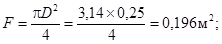
периметр сваи u = pD = 3,14´0,5 = 1,57 м;
дополнительный коэффициент условий работы mf = 0,8;
нормативное сопротивление грунта на боковой поверхности ствола, принимаемое по табл. 6, составит:
для первого слоя суглинка средняя глубина расположения слоя
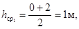
В = 0,3, тогда
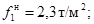
для второго слоя
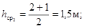 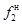
находим интерполированием:
при h1 = 1,0 м; В
= 0,14; 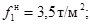
при h2 = 2,0 м; В
= 0,14; 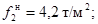
при h3 = 1,5 м; В = 0,14;
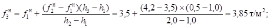
При значениях В <
0,2 значения 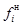
l1 = 2,0 м; l2 = 1,0 м.
Несущая способность сваи по грунту будет:
Р = 0,7´1[70´0,196 + 1,57´0,8(2,3´2 + 3,85´1)] = 17,0 т.
Так как несущая способность сваи по материалу Рм = 47,0 т., а по грунту Р = 17,0 т, то принимаем меньшее из двух значений. Несущая способность сваи Р = 17,0 т. Проверяем условие (1) приложения 1.
16,5 т < 17,0 т.
Значит, выбранные размеры (диаметр, длина) свай и их шаг удовлетворят условию (1). В случае неудовлетворения условия (1) необходимо задаться другими размерами или шагом свай.
Таблица 5
|
Толщина слоя, м |
Удельный вес ( 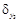 |
Объемный вес (g0), т/м3 |
Природная влажность (W), % |
Предел текучести (Wг), % |
Предел раскатывания (Wp), % |
Показатель консистенции (B) |
Коэффициент пористости (e) |
Степень влажности (G) |
|
|
Суглинок светло-коричневый тугопластичный |
2 |
2,73 |
1,83 |
19,4 |
27,1 |
16,1 |
0,3 |
0,78 |
- |
|
Суглинок коричневый полутвердый |
1 |
2,73 |
1,94 |
20,3 |
30 |
18,7 |
0,14 |
0,69 |
- |
|
Песок крупный, плотный влажный |
6,2 |
2,67 |
2,09 |
15 |
- |
- |
- |
0,47 |
0,64 |
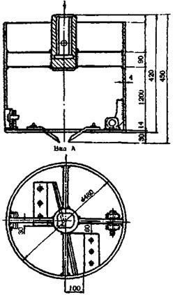
Приспособление для выемки грунта из скважин
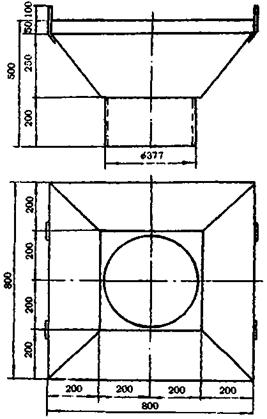
Загрузочная воронка
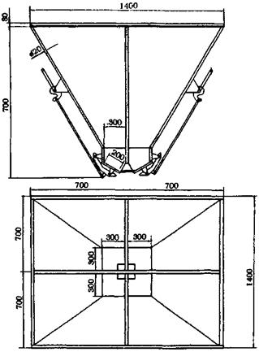
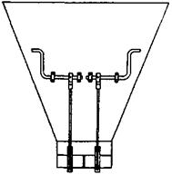
Бункер для камня
ЖУРНАЛ ПРОИЗВОДСТВА РАБОТ ПО УСТРОЙСТВУ КОРОТКИХ БУРОНАБИВНЫХ БЕТОННЫХ И БУТОБЕТОННЫХ СВАЙ
|
Объект_________________________________________________________________ |
|
Строительная организация _________________________________________________ |
|
Производитель работ _____________________________________________________ |
|
Лаборант _______________________________________________________________ |
|
Тип бурильного агрегата __________________________________________________ |
|
№ п/п |
Дата бурения скважин |
№ скважин (свай) |
Краткая характеристика разбуренных грунтов |
Диаметр скважин |
Глубина скважин |
Дата бетонирования |
Марка бетона (бутобетона) |
Процент содержания камня в бутобетоне |
|||
|
по проекту, м |
фактически, м |
Примечание |
|||||||||
|
по проекту, м |
фактически, м |
||||||||||
|
1 |
2 |
3 |
4 |
5 |
6 |
7 |
8 |
9 |
10 |
11 |
12 |